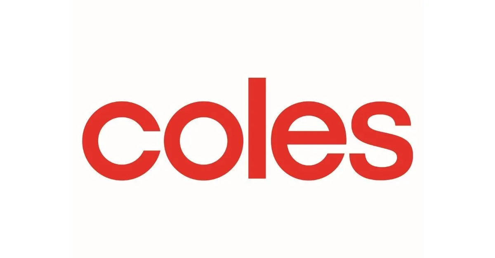

- Formed and coached Agile teams to work seamlessly according to Scrum values.
- Managed core Agile ceremonies within team: Sprint Planning, Daily Scrum, Sprint Review and Sprint Retrospective.
- Performed data analytics life cycle to create data-driven decision making.
- Supported 2 stakeholders and 2000+ customers to maintain highest quality products & services according to Product-Market Fit Framework.
Skills: Data Analytics · Data-driven Decision Making · Agile Project Management · Customer Relationship Management · Digital Marketing.
December 2019 - February 2021
- Provided education and consultation to potential and existing clients through seminars and webinars.
- Provided research and analysis of financial markets and its products.
- Managed relationships with over 10 account holders by acting as trading advisor.
- Increased clients quarterly trading volume by up to $100,000.
Skills: Technical Analysis · Data-driven Decision Making · Customer Relationship Management.
June 2017 - November 2019

- Customer Service: Provides an excellent customer assistance regarding products and store.
- tock Control: Reporting available product stock to ordering system and perform gap scans. Implementing First in
First out (FIFO) method on every product.
- Rostering: Making sure team members are rostered accordingly to meet workloads.
- Supervise and Mentoring: supervise and mentor current & new team members to help career progression and
seamless working experience.
Skills: Customer Service · Inventory Management · Merchandising · Supply Chain Management.
February 2015 - November 2017
- Resolved computer-related desktop and network communication tickets allowing customers and systems.
- Provided support for enterprises from small to large scale.
- Successfully designed and deployed new internetworking projects across the region.
- Reduced downtime for enterprises and subscribers across the country by scheduling and performing timely maintenance of hardware and software.
Skills: Technical Support · Customer Service · Computer Network Operations · Network Engineering.